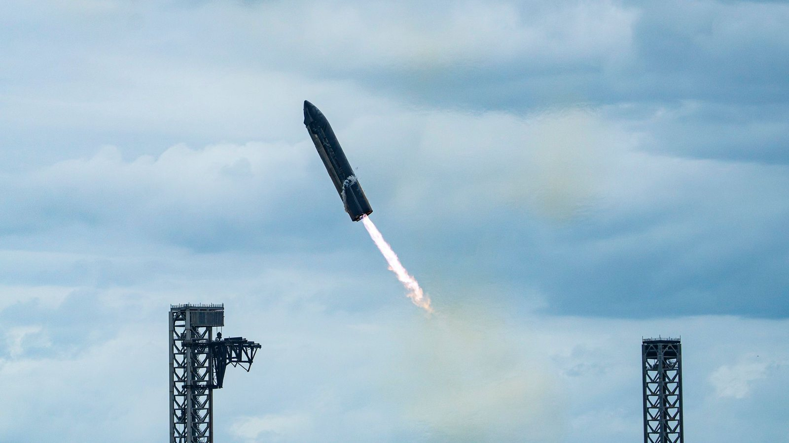
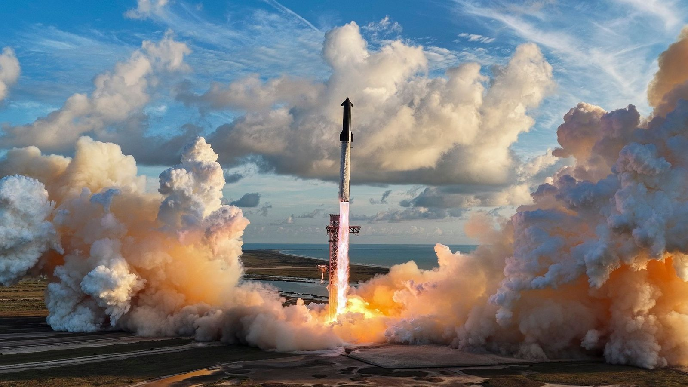

Zukunftsthema ·
SpaceX fängt Starship aus dem Orbit: Warum dieser Fang für das Geschäft zählt
Zum ersten Mal ist die Oberstufe der größten Rakete der Welt aus dem Orbit zurückgekehrt und vom Startturm gefangen worden. Für SpaceX ist das mehr als ein Technikrekord: Davon hängen Starlink, die KI-Pläne und die Kosten des Konzerns ab.
Redaktion Vision Universe · Stand 16.11.2026, 12:00 Uhr · 4 Min. Lesezeit

Am Freitagabend startete Starship in Starbase, Texas, zu seinem 15. Testflug. Rund 22,5 Stunden später, am Samstag, kehrte die Oberstufe aus dem Orbit zurück und wurde von den beiden Greifarmen des Startturms aufgefangen. Das war der erste Fang dieser Art überhaupt. Unterwegs setzte das Schiff 26 Starlink-Satelliten der neuen Generation V3 aus und umrundete die Erde laut Associated Press 14-mal.
Ganz nach Plan lief der Flug nicht. Auch die erste Stufe, der Super-Heavy-Booster, sollte gefangen werden. Laut SpaceX endete aber sein Rückflugmanöver wegen zu wenig Treibstoff zu früh; die Bordsteuerung lenkte ihn automatisch in den Golf von Mexiko, wo er zerstört wurde. Die Ursache wird untersucht. Den Booster hatte SpaceX zuvor schon dreimal gefangen, die Oberstufe noch nie.
Warum der Fang so wichtig ist
Raketen waren lange Einwegprodukte. SpaceX hat mit der Falcon 9 gezeigt, dass eine wiederverwendete erste Stufe die Kosten pro Start stark senkt. Starship soll den nächsten Schritt gehen: Beide Stufen sollen landen, schnell geprüft werden und wieder starten. Die Oberstufe ist dabei der schwierigere Teil, weil sie aus dem Orbit mit viel höherer Geschwindigkeit zurückkommt und den Wiedereintritt mit ihrem Hitzeschild überstehen muss. Nach Angaben von SpaceX sah das Hitzeschild diesmal gut aus.
SpaceX braucht Starship für eine hohe Taktzahl. Laut Space.com soll das Starlink-Netz der Generation V3 einmal aus bis zu 100.000 Satelliten bestehen; heute sind es rund 11.000. Ein Starship-Flug bringt laut SpaceX etwa zehnmal so viel Datenkapazität ins All wie ein Starlink-Start mit der Falcon 9. Dazu kommt die NASA: Starship soll Astronauten im Artemis-Programm auf den Mond bringen. Laut Associated Press will SpaceX in den nächsten Monaten auch vom Kennedy Space Center in Florida starten.

Ein Konzern aus Raketen, Internet und KI
Seit Juni ist SpaceX an der Nasdaq notiert. Die Zahlen zum dritten Quartal zeigen, dass Raketen nur noch der kleinste Teil des Geschäfts sind. Von 14,6 Milliarden Dollar Umsatz, 161 Prozent mehr als ein Jahr zuvor, kamen 1,8 Milliarden aus der Raumfahrt, 5,2 Milliarden aus Starlink und 7,6 Milliarden aus der KI-Sparte, die SpaceX „Super Intelligence“ nennt. Dazu gehören laut Mitteilung Cloud-Verträge, die übernommene Programmiersoftware Cursor und die KI-Modelle rund um Grok.
Starlink ist das verlässlichste Standbein: 13,6 Millionen Privatkunden, 1,6 Millionen mehr als im Vorquartal, und ein operativer Gewinn von 2,4 Milliarden Dollar, fast doppelt so viel wie ein Jahr zuvor. Die Raumfahrtsparte lag dagegen knapp im Minus, weil SpaceX viel Geld in die Entwicklung von Starship steckt. Unter dem Strich verdiente SpaceX 4,4 Milliarden Dollar, nach einem Verlust von 1,1 Milliarden ein Jahr zuvor.
„Das war der heilige Gral der Raumfahrt. Wir haben ein Starship gefangen, und jetzt ändert sich alles.“
Dan Huot, SpaceX, im Livestream zur Landung am 14.11.2026, laut Space.com (übersetzt)
Die Kehrseite: enorme Investitionen
Das Wachstum kostet viel Geld. Im dritten Quartal investierte SpaceX 19,6 Milliarden Dollar in Anlagen, mehr als der gesamte Umsatz. 16,4 Milliarden davon flossen in die KI-Sparte, vor allem in Rechenzentren; die Rechenleistung lag Ende September bei 1,7 Gigawatt. Im Oktober meldete SpaceX zusätzlich eine Vereinbarung mit einer von Apollo verwalteten Gesellschaft: Sie soll Grafikchips kaufen und an SpaceX vermieten, mit Zahlungen von insgesamt rund 40 Milliarden Dollar über etwa fünf Jahre.
Für Anleger heißt das: Die Geschichte von SpaceX hängt längst nicht mehr nur an Raketen. Starship soll die Satelliten günstiger ins All bringen, Starlink liefert die laufenden Einnahmen, und die KI-Sparte bindet den größten Teil des Kapitals. Ob sich diese Investitionen auszahlen, ist offen.
Was unsere Daten zeigen
Die Aktie schloss am Freitag, vor dem Fang, nach unseren Daten 0,6 Prozent tiefer bei 139,11 Dollar. Das ist rund 14 Prozent unter dem ersten Schlusskurs nach dem Börsengang (160,95 Dollar am 12. Juni) und gut 30 Prozent unter dem bisherigen Schlusshoch von 201,80 Dollar vom 16. Juni. Der Tiefpunkt lag Anfang August bei 108,27 Dollar. Über einen Monat liegt die Aktie rund 6 Prozent im Minus. Wie die Börse den Fang bewertet, zeigt sich erst mit dem Handel am Montag. Für viele Kennzahlen ist die Aktie noch zu kurz notiert; Geschäftszahlen über vier Quartale liegen in unseren Daten noch nicht vor. Nach den Pflichtmeldungen großer Fonds zum 30. September (13F) hielten 94 Hedgefonds die Aktie; 83 hatten aufgestockt oder waren neu eingestiegen. Die Kacheln und App-Ansichten zeigen den Kursverlauf seit dem Börsengang.
Worauf es jetzt ankommt
Die nächste Probe ist der doppelte Fang: Laut Space.com will SpaceX schon beim nächsten Flug wieder Booster und Oberstufe zurückholen. Erst wenn beide Stufen regelmäßig landen und schnell wieder fliegen, sinken die Kosten so stark, wie SpaceX es plant. Dazu kommen die Starts aus Florida und die Vorbereitung auf die Mondmissionen der NASA.
Auf der Geschäftsseite zählt, ob Starlink weiter so schnell wächst und ob die KI-Sparte ihre hohen Investitionen mit Umsatz und Gewinn hinterlegen kann. Die Zahlen zum vierten Quartal folgen Anfang 2027.
Termine
- offenStarship Flug 16: nächster Versuch, beide Stufen zu fangen
- Anfang 2027SpaceX: Zahlen zum vierten Quartal 2026
Quellen
- SpaceX: Starship Flight 15, 14.11.2026
- SpaceX (SEC-Meldung, Form 8-K): SpaceX Reports Third Quarter 2026 Results, 20.10.2026
- SpaceX (SEC-Meldung, Form 8-K): Item 8.01 Other Events: GPU-Leasing mit einer von Apollo verwalteten Gesellschaft, 26.10.2026
- Space.com: 'Now everything changes': SpaceX catches Starship upper stage for 1st time ever, 14.11.2026
- NBC News / Associated Press: SpaceX’s Starship returns from orbit and is captured by launchpad arms in a dramatic first, 14.11.2026
Zitate aus englischen Quellen sind übersetzt. Kurse, Kennzahlen und Fondsdaten im Kasten stammen aus Vision Universe (Stand siehe Kasten). Angabe Dritter: zusammengefasste Einschätzungen externer Analysten bzw. Pflichtmeldungen an die SEC, unverändert mit Quelle und Datum. Nicht von Vision Universe erstellt und keine Einschätzung von Vision Universe. Dieser Artikel wurde automatisch erstellt und vor der Veröffentlichung gegen die genannten Quellen geprüft.
Vision Universe
Diese Aktie mit allen Zahlen
Kurs, Bewertung, Geschäftszahlen, Chart und was große Fonds tun: In Vision Universe steht zu jeder Aktie dieselbe Analyse, auf der dieser Artikel aufbaut.
Artikel in Vision Universe öffnen→ Zum Start der App benachrichtigen